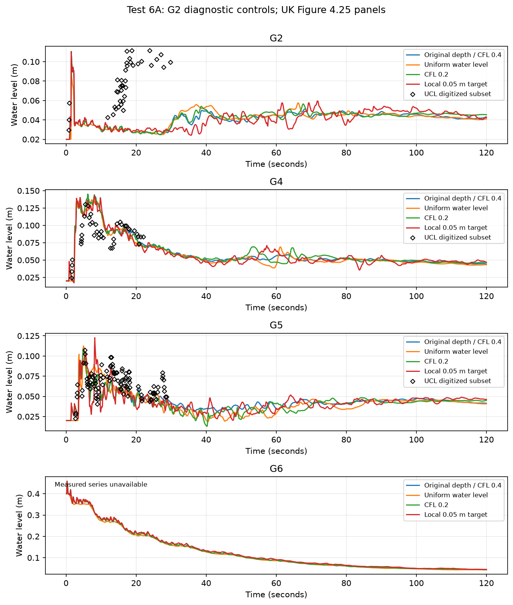
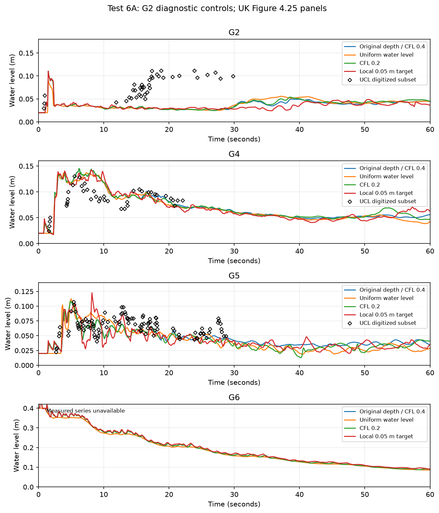
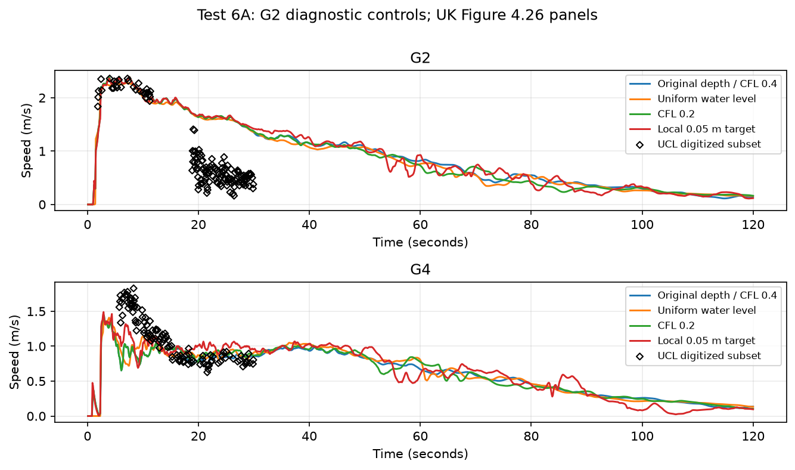
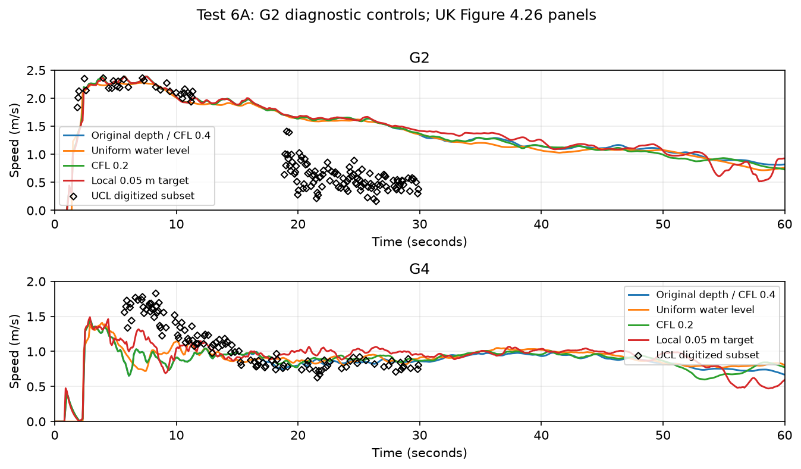
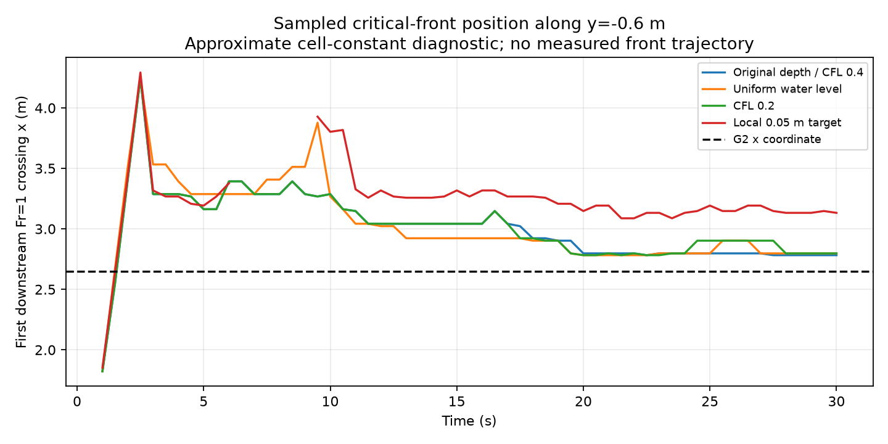
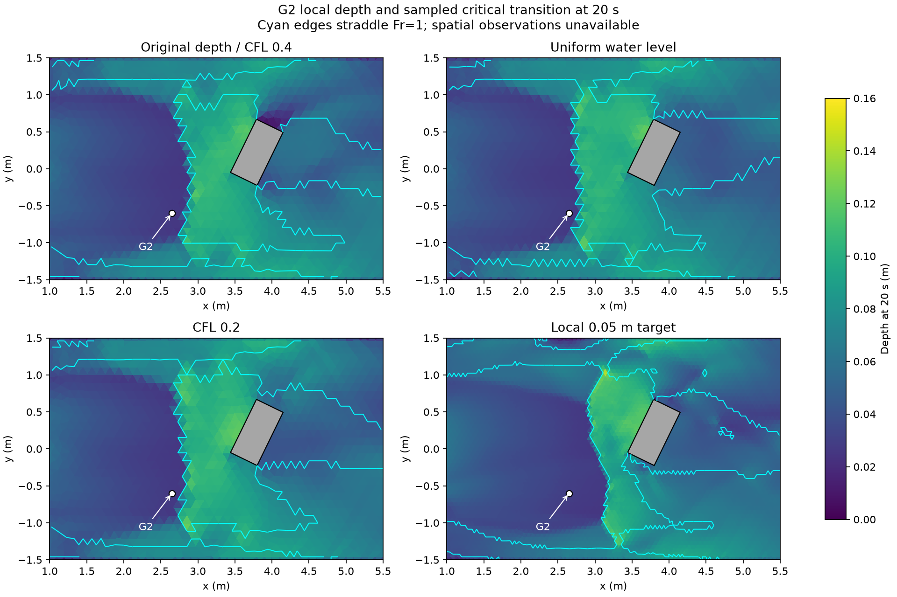

Test 6A: G2 hydraulic-jump diagnostic controls
All three new variants and the archived control completed 120 seconds. These are sensitivity experiments, not replacements for the canonical benchmark or its regression anchor. No coefficients or gauge locations were fitted.
The original 0.1 m target mesh, uniform-depth initial condition and CFL 0.4 form the control. Each variant changes one declared factor. All cases retain Manning n=0.01, free-slip walls, Coriolis OFF, Cs=0 and accepted cell q/h velocity output. The local refinement uses the unchanged GUI constrained mesher with a graded size callback; its no-refinement result reproduced the original mesh bit for bit. The nominal 0.05 m local target reduces median local edge length from 0.122 m to 0.061 m. Boundary geometry, bank toes, gate interface and obstruction are audited independently.
The uniform-level variant initializes h=max(H-z_cell,0), with H=0.4 m upstream and 0.02 m downstream, under the same FLAT storage closure. Main report wording and specification depth wording conflict. This declared variant changes initial storage from 16.618 m3 to 15.07377 m3; it is not silently adopted as a correction.
Only visibility-selected digitized UCL measurement diamonds from UK Figures 4.25/4.26 are used. G6 measurements and original full records remain unavailable; marker extraction has no independent second-person review. RMSE uses the same recovered samples and segmented trapezoidal weights, excluding gaps longer than 1 s. Exact errors remain provisional. The Environment Agency report supplies the source panels and test specification.
Each case uses one solver thread on the same Apple M1 Max host as the preceding wall study. Runs share machine resources; elapsed times in their metrics are not controlled performance measurements. All three new cases use the same immutable solver CLI and library as the archived control.
The independent input-factor audit verifies the intended changes and equality of unrelated input sections. The finer mesh naturally reduces the stable timestep at the same CFL; the smaller-CFL coarse control measures temporal sensitivity separately. This pair is not a formal mesh-convergence study.
| Configuration | G2 level RMSE (m) | G2 speed RMSE (m/s) | G4 level RMSE (m) | G4 speed RMSE (m/s) | G5 level RMSE (m) | Volume residual (m3) | Evidence |
|---|---|---|---|---|---|---|---|
| Original depth / CFL 0.4 | 0.055899 | 0.821976 | 0.0238486 | 0.325948 | 0.0169816 | -1.42109e-14 | INP, CSV, metrics, identity |
| Uniform water level | 0.0561892 | 0.809128 | 0.022292 | 0.315033 | 0.0179586 | -3.90799e-14 | INP, CSV, metrics, identity |
| CFL 0.2 | 0.0558299 | 0.822782 | 0.0241575 | 0.330168 | 0.0176795 | -8.17124e-14 | INP, CSV, metrics, identity |
| Local 0.05 m target | 0.055046 | 0.836779 | 0.0237839 | 0.28145 | 0.02311 | -7.10543e-15 | INP, CSV, metrics, identity |
Jump and wall-pressure verification
Sixteen closed-domain checks exercise stationary, upstream-moving, oblique-flow and wall-reflected jumps on triangular meshes, both reconstruction orders, and 0/64 degree orientations. References follow independent mass/momentum jump relations. Errors are scored at 0.5 s inside a causal window isolated from artificial outer-wall disturbances. Whole-domain volume is conserved. The frozen criteria, per-case fields and residuals remain in the verification plan and results. The same inputs are now retained as the repeatable analytical/hydraulic_jumps suite; its committed-source run passes all sixteen cases.
The earlier open-stage-boundary fixtures did not retain the assumed far-field discharge; their failures are retained in the stage-boundary results, not relabelled as passing. They do not qualify a prescribed-discharge solution. Test 6 itself has solid exterior walls. The initial analytical fixture with inconsistent global/output steps was rejected before a solver verdict; its rejection record is retained.
Passing these controlled checks does not establish the correct two-dimensional front trajectory around the building. Second-order rotation differences are reported, not assumed zero. Rotation comparison.
Local transition and gauge histories
The front diagnostic records the first downstream crossing of speed/sqrt(g*h)=1 along y=-0.6 m. It is sampled from cell-constant fields and is not a shock-normal tracking solution. No measured spatial front trajectory is available. Gauge sampling remains the containing cell, with deterministic shared-edge handling.






Preregistered controls. Case summary. Front samples. G2 sampled states. Report identity.
Interpretation
None of the three controls reproduces the measured secondary transition at G2. Speed RMSE is 0.821976 m/s in the original control, 0.809128 m/s with uniform initial water level, 0.822782 m/s with CFL 0.2 and 0.836779 m/s with local refinement. G2 level RMSE remains between 0.0550 and 0.0562 m. At 20 s, G2 remains strongly supercritical in all four runs; the sampled critical transition lies near x=2.78–3.15 m, downstream of G2 at x=2.65 m. Local refinement moves that front farther downstream. The sixteen analytical jump/reflection cases pass, supporting the basic shock and pressure response without establishing the correct two-dimensional front position.
One local refinement and one smaller-CFL control do not establish spatial or temporal convergence. The finer mesh also has a naturally smaller stable timestep. Comparisons retain the drawing-based geometry, prescribed roughness and visibility-selected digitized UCL subset; original full measurements and independent digitization review remain unavailable. Changes at G4 and G5 are appreciable and mixed, so improving one quantity does not select a better configuration. The canonical inputs and reviewed regression anchors remain unchanged.
Extend the refinement study across the reservoir and gate as well as the building; qualify the drawing-versus-DEM obstacle and bank interpretation independently; audit the momentum balance around the two-dimensional jump before adding or calibrating more forces.